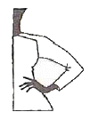
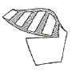
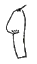
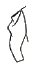
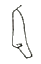
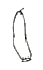
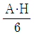
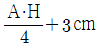
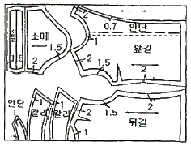

패션디자인산업기사 (2009-05-10 기출문제)
1과목: 피복재료학
1. 섬유내에서 분자들이 잘 배향되어 있으면 향상되는 것은?
- 흡습성
- 염색성
- 섬유의 강도
- 섬유의 신도
(정답률: 알수없음)

2. 양모 섬유의 단면구조에서 나타나지 않는 것은?
- 겉비늘(cuticle scale)
- 모수(medulla)
- 내섬유(cortex)
- 크림프(crimp)
(정답률: 알수없음)
3. 서로 다른 두 가지 이상의 조직을 배합하여 조직점이 불규칙하게 배치되어 표면이 오톨도톨하게 보이게 만든 조직은?
- 오트밀(oatmeal)
- 홈스펀(homespun)
- 오건디(organdy)
- 깅엄(gingham)
(정답률: 알수없음)
4. 다음 직물의 조직 중 실의 굴곡이 가장 적고, 조직점이 적어서 유연하며, 표면이 매끄러워 광택이 좋은 것은?
- 평직
- 주자직
- 사문직
- 이중직
(정답률: 알수없음)
5. 다음 섬유 중 안전 다림질 온도가 가장 높은 것은?
- 아세테이트
- 아크릴
- 양모
- 비스코스레이온
(정답률: 알수없음)
6. 인조섬유의 제조를 성공시킨 최초의 사람으로 인조섬유의 아버지라 칭하는 사람은?
- 샤르돈네
- 틸레
- 슈첸베르거
- 캐로더스
(정답률: 알수없음)
7. 직물과 비교했을 때 편성물의 특성이 아닌 것은?
- 신축성이 크다.
- 유연성이 크다.
- 함기량이 많다.
- 구김이 잘 생긴다.
(정답률: 알수없음)
8. 평직물과 비교하여 능직물의 특징이 아닌 것은?
- 평직물보다 조직점이 적어 유연하다.
- 두꺼우면서도 부드럽다.
- 광택이 좋고 표면 결이 곱다.
- 표리의 구분이 없다.
(정답률: 알수없음)
9. 다음 중 종자섬유에 해당되는 것은?
- 면
- 야자
- 마닐라
- 모시
(정답률: 40%)
10. 경이중직을 이용하여 가로 방향의 두둑 무늬를 나타낸 직물은?
- 피케(pique)
- 코듀로이(corduroy)
- 그로스그레인(grosgrain)
- 베드퍼드 코드(bedford cord)
(정답률: 알수없음)
11. 다음 무기섬유 중 천연 암석을 원료로 하는 것은?
- 유리섬유
- 금속섬유
- 탄소섬유
- 암면섬유
(정답률: 알수없음)
12. 다음 중 변화평직으로서 바스켓직에 해당되는 것은?
- 포플린(poplin)
- 옥스퍼드(oxford)
- 헤링본(herringbone)
- 서지(serge)
(정답률: 알수없음)
13. 다음 중 피륙의 구성방법이 나머지 셋과 다른 것은?
- 편성물
- 펠트
- 레이스
- 브레이드
(정답률: 알수없음)
14. 섬유의 굵기에 대한 설명 중 틀린 것은?
- 섬유의 굵기를 표시할 때는 데니어(denier)와 텍스(tex)단위가 일반적으로 사용된다.
- 다른 종류의 섬유라도 같은 데니어에 있어서 비중이 클수록 굵어진다.
- 다른 종류의 섬유이면 같은 데니어라도 비중에 따라 실제의 굵기는 달라진다.
- 데니어는 9,000m의 섬유의 무게를 g수로 표시한 것이다.
(정답률: 알수없음)
15. 다음 중 장식사가 아닌 것은?
- 슬럽사(slub yarn)
- 스파이럴사(spiral yarn)
- 넙사(nub yarn)
- 콤비네이션사(combination yarn)
(정답률: 알수없음)
16. 섬유로 된 얇은 웹(web)을 접착제나 열융접착으로 고착시킨 피륙은?
- 펠트
- 레이스
- 부직포
- 편성물
(정답률: 알수없음)
17. 다음 중 평직의 특징이 아닌 것은?
- 구김이 잘 생긴다.
- 앞뒤의 구별이 없다.
- 제직이 간단하다.
- 표면이 매끄럽고 광택이 좋다.
(정답률: 알수없음)
18. 다음 중 양모섬유의 주성분에 해당되는 것은?
- 세리신
- 피브로인
- 케라틴
- 펙틴
(정답률: 알수없음)
19. 인조섬유 필라멘트사에 여러 가지 기계 처리를 하여 루프 또는 권축을 만들어 신축성을 향상시키고 함기량을 크게 한 실은?
- 텍스처사
- 직방사
- 혼방사
- 교합사
(정답률: 알수없음)
20. 다음 마섬유 중 삼베를 만드는 것은?
- 저마(ramie)
- 대마(hemp)
- 아마(flax)
- 황마(jute)
(정답률: 50%)
2과목: 패션디자인론
21. 디자인의 원리 중 비례에 대한 설명으로 틀린 것은?
- 비례는 가로와 세로의 관계를 말한다.
- 특이한 재질은 작은 면적에 사용해야 한다.
- 비슷한 면적일 때 색채는 대비조화를 이루도록 한다.
- 황금분할은 의복디자인에 자주 응용된다.
(정답률: 알수없음)
22. 톤 분류법의 특징이 아닌 것은?
- 색채를 기억하기 쉽다.
- 색상의 범위를 지적하기 쉽다.
- 이미지를 반영하기 어렵다.
- 조화를 생각하기 쉽다.
(정답률: 알수없음)
23. 상ㆍ하의가 분리되어 있는 세퍼레이트 드레스로 상ㆍ하가 보통 같은 천으로 만들어진 의복은?
- 스커트
- 원피스
- 슈트
- 블라우스
(정답률: 알수없음)
24. 의복의 발생 기원 중 보호설에 해당되는 것은?
- 기후적응설
- 이성흡인설
- 정조관념설
- 정신적보호설
(정답률: 알수없음)
25. 다음 중 디테일의 설명으로 옳은 것은?
- 디테일은 화려한 것으로만 장식된 것이다.
- 디테일은 장식을 만들어서 옷에 단 것을 말한다.
- 디테일은 스팽글이나 구슬 종류를 말한다.
- 의복을 만드는 봉제 과정에서 바탕천으로 만들어진다.
(정답률: 알수없음)
26. 점진적 리듬의 디자인 원리에 해당되는 스커트는?
- 요크 스커트(yoke skirt)
- 벌룬 스커트(ballon skirt)
- 티어드 스커트(tiered skirt)
- 튜닉 스커트(tunic skirt)
(정답률: 알수없음)
27. 신체를 감싸는 것을 의미하지만 모자, 장갑, 구두와 같은 부속품은 포함되지 않는 복식은?
- 복장
- 피복
- 의상
- 의복
(정답률: 알수없음)
28. 다음 중 강조(emphasis)의 방법으로 틀린 것은?
- 강조의 정도는 옷 입는 사람의 직업, 연령, 성별, 계절 등에 따라 다르다.
- 강조점은 다른 요소보다 월등히 강해야 하고, 하나에 집중되어야 효과적이다.
- 직물에 따라 강조의 정도는 달라서 무지의 옷감인 경우 강조의 요소가 더욱 필요하다.
- 이브닝 웨어보다 비즈니스 웨어에 강한 강조점을 사용하면 효과적이다.
(정답률: 알수없음)
29. 포스터 컬러의 특징 설명으로 틀린 것은?
- 불투명한 물감이므로 색지 위에 컬러를 입힐 수 있는 장점이 있다.
- 겹치는 효과와 번지는 효과를 적절히 조화시킬 수 있다.
- 평면처리하는 도식화에 사용하면 좋은 효과를 얻을 수 있다.
- 입체감이나 사실감을 살리는데는 적절한 재료가 아니다.
(정답률: 알수없음)
30. 패션디자인의 목표가 아닌 것은?
- 디자인 요소의 조화
- 제품 특성 설정
- 적합성의 증대
- 시대적 미 추구
(정답률: 알수없음)
31. 감각적인 곡선을 주제로 하는 표면적인 양식미로 식물의 형태를 연상하게 하는 유연하고 유통적인 S자 곡선의 정교하고 여성적인 신비로움을 준 양식은?
- 시세션(Secession)
- 아르데코(Art Deco)
- 아르누보(Art Nouveau)
- 쉬리얼리즘(Surrealism)
(정답률: 알수없음)
32. 공통의 성격으로 상호관계를 이루면서 질서있게 통합되어 조화의 미를 나타내는 디자인 원리는?
- 비례
- 균형
- 조화
- 통일
(정답률: 알수없음)
33. 다음 톤(tone) 중 고명도 계열에 속하지 않는 것은?
- 브라이트(bright)
- 라이트(light)
- 페일(pale)
- 스트롱(strong)
(정답률: 알수없음)
34. 색의 일반적인 현상에 대한 설명으로 옳은 것은?
- 색채를 시각적으로 느끼게 하는 것은 적외선이다.
- 물체색은 주로 흡수된 빛을 말한다.
- 백열등은 태양광선에 비하여 남색과 보라 등의 한색에 약하다.
- 검정색은 모든 빛을 다 반사하기 때문에 희게 보인다.
(정답률: 알수없음)
35. 스타일화에 대한 설명으로 틀린 것은?
- 의상디자인에서 설명도의 역할을 한다.
- 스타일화라는 용어는 1920년대 프랑스에서 유래 되었다.
- 현대적 개념으로 패션일러스트레이션이라고도 한다.
- 의상의 완성된 상태를 예측하여 그린다.
(정답률: 알수없음)
36. 다음 그림과 같은 소매의 명칭은?

- 세미 래글런 소매(semi raglan sleeve)
- 에폴렛 소매(epaulet sleeve)
- 요크 소매(yoke sleeve)
- 웨지 소매(wedge sleeve)
(정답률: 알수없음)
37. 신체상의 장식방법 중 전족(bound foot)이 해당되는 것은?
- 상흔
- 문신
- 변형
- 제거
(정답률: 알수없음)
38. 무늬와 체형과의 관계에 대한 설명 중 옳은 것은?
- 큰 무늬는 작은 사람에게 어울린다.
- 무늬에 강한 색채대비가 있으면 체형이 작아 보인다.
- 모티브의 크기가 작고 촘촘한 무늬는 모든 체형에 어울린다.
- 뚱뚱한 사람은 무늬가 없는 옷을 입으면 날씬해 보인다.
(정답률: 알수없음)
39. 색채의 상징에 대한 설명으로 틀린 것은?
- 각 색채별 의미는 시대나 문화권마다 차이가 있다.
- 시대와 문화가 다르더라도 색채의 상징에는 차이가 없다.
- 개인의 성, 연령, 역할, 문화적 배경 등에 따라 색채에 대한 기호가 다르다.
- 각 문화권마다 색채를 상징적인 표현수단으로 사용하였다.
(정답률: 알수없음)
40. 색의 연구를 내적인 면과 외적인 면으로 구분할 때 외적인 면에 해당되는 것은?
- 물리적 측면, 미학적 측면
- 물리적 측면, 생리적 측면
- 심리적 측면, 생리적 측면
- 심리적 측면, 미학적 측면
(정답률: 알수없음)
3과목: 의류상품학 및 복식문화사
41. 그리스 복식의 특성에 대한 설명 중 틀린 것은?
- 직사각형 천을 몸에 두르거나 감싸는 형태이다.
- 전체적으로 균형 잡힌 실루엣이다.
- 반투명한 실루엣을 즐겼고, 남녀 구별이 뚜렷하지 않았다.
- 권위있는 아름다운 표현이 대표적이다.
(정답률: 알수없음)
42. 광고의 목적에 대한 설명으로 가장 옳은 것은?
- 독자에게 상품에 대한 뉴스로 흥미를 유도하는 방향으로 전개한다.
- 흥미집단을 향한 매체로부터의 메시지이다.
- 기업이 제공하는 상품이나 서비스에 대한 잠재고객의 반응을 촉진한다.
- 소비자의 욕구를 이해하고 충족시켜 준다.
(정답률: 알수없음)
43. 상품의 그레이드 및 패션 수용도에 의한 상품분류가 틀린 것은?
- 바겐 상품(bargain stock) - 현재 유행중인 상품
- 모드 상품(mode stock) - 다가오는 패션을 예고하는 상품
- 프레스티지 상품(prestige stock) - 이미지 향상을 위한 디스플레이 상품
- 스테이플 상품(stpale stock) - 중요상품
(정답률: 알수없음)
44. 여성의 허리곡선이 강조된 복식에 해당되는 것은?
- 로맨틱 스타일, 뉴룩
- 키톤, 슈미즈 가운
- 히마티온, 토가
- 크라바트, 밀리터리 룩
(정답률: 알수없음)
45. 패션 예측시 고려해야 할 중요한 요인이 아닌 것은?
- 고객의 동향
- 패션에 변화를 주는 요인
- 패션의 동향
- 고객 개인의 이미지
(정답률: 알수없음)
46. 지배적인 라인이나 룩이 뚜렷하지 않는 불확실한 시대로, 전체적인 실루엣이 조금씩 풍성해지기 시작하여 현대성과 합리성을 고려한 기능적인 빅룩(big look)이 주를 이루 시대는?
- 1960년대
- 1970년대
- 1980년대
- 1990년대
(정답률: 알수없음)
47. 이집트 시대 왕족의 남자들만이 장식적인 효고를 내기 위해 착용한 의복은?
- 로이클로스(loincloth)
- 칼라시리즈(kalasiris)
- 트라이앵귤러 에이프런(triangular apron)
- 튜닉(Tunic)
(정답률: 알수없음)
48. 블리오(bliaud)에 대한 설명으로 옳은 것은?
- 남자들만이 착용한 의복이었다.
- 비잔틴의 대표적 복식이다.
- 어리에 관을 쓰고 망토를 뺨있는 부분까지 올려 걸치고 있는 형태이다.
- 울과 실크의 교직물을 소재로 사용하였다.
(정답률: 10%)
49. 패션 관련 용어 중 패션화 과정상 초기 단계이며 대중과 차별화되고, 착용자의 사회적 명성이나 권위 및 높은 가격 증의 특징을 갖는 것은?
- 매스패션
- 클래식
- 모드
- 하이패션
(정답률: 알수없음)
50. 색채기획의 순서로 옳은 것은?
- 패션 컬러 포케스팅 → 마켓정보 수집 → 패션 정보 분석 → 컬러 컨셉 결정 → 컬러 스토리 결정
- 컬러 컨셉 결정 → 컬러 스토리 결정 → 마켓 정보 수집 → 패션정보 분석 → 패션 컬러 포케스팅
- 패션정보 분석 → 패션 컬러 포케스팅 → 컬러 컨셉 결정 → 컬러 스토리 결정 → 마켓정보 수집
- 마켓정보 수집 → 패션정보 분석 → 패션 컬러 포케스팅 → 컬러 컨셉 결정 → 컬러 스토리 결정
(정답률: 알수없음)
51. 르네상스 시대 여성복에 나타난 특징으로 틀린 것은?
- 로인클로스나 언더팬티를 입었다.
- 맨살 위에 린넨으로 만든 슈미즈를 입었다.
- 가슴과 허리를 조이는 코르셋을 입었다.
- 소매를 부풀리고 목선을 가슴 깊이 내려 팠다.
(정답률: 알수없음)
52. 제2차 세계대전 직후 밀리터리룩에 다소의 변화가 생기면서 나타난 스타일로 여성스러움을 강조하면서도 더욱 대담해진 스타일은?
- 빅룩(big look)
- 보울드룩(bold look)
- 뉴룩(new look)
- 유니섹스룩(unisex look)
(정답률: 알수없음)
53. 고대 복식 중 자연 그대로의 체형 곡선미를 아름답게 표현한 몸에 꼭 끼는 복식은?
- 그리스 복식
- 로마 복식
- 이집트 복식
- 크레타 복식
(정답률: 알수없음)
54. 고딕시대 여자의 모자로서 고딕 건축 양식을 표현한 것이 가장 특징인 것은?
- 토크(toque)
- 페타서스(petasos)
- 톨리아(tholia)
- 에넹(hennin)
(정답률: 알수없음)
55. 수평전파이론이 등장하게 된 사회적 배경이 아닌 것은?
- 대량 생산
- 대량 마케팅
- 대중 매체의 발달
- 빈부 격차
(정답률: 알수없음)
56. 광고와 비교한 디스플레이의 장점으로 옳은 것은?
- 정보를 제공한다.
- 특정 기업의 상품을 선택해야 할 이유를 제시한다.
- 소비자의 욕구 충족의 길을 열어 준다.
- 고객에게 직접 상품 이미지가 전달된다.
(정답률: 알수없음)
57. 패션컬러 정보에 있어서 유행색이 발표되는 시기는?
- 24개월 전
- 18개월 전
- 12개월 전
- 6개월 전
(정답률: 알수없음)
58. 의복의 변천 과정 연결이 옳은 것은?
- 로룸(lorum) → 팔리움(pallium)
- 히마티온(himation) → 팔라(palla)
- 클라미스(chlamys) → 스톨라(stola)
- 팔라다멘툼(paludamentum) → 키톤(chiton)
(정답률: 알수없음)
59. 판매기획에 해당되지 않는 것은?
- 재고처리 계획
- 전시회를 통한 수주회
- 상품기획 설명회
- 판매정보 시스템 활용
(정답률: 알수없음)
60. 다음 중 르네상스 양식의 복식에 해당되지 않는 것은?
- 슬래시(slash)
- 러프(ruff)
- 베스트(vest)
- 파딩게일(farthingale)
(정답률: 알수없음)
4과목: 패턴공학 및 의복구성학
61. 원가관리의 기준에서 원가의 3요소가 아닌 것은?
- 재료비
- 운송비
- 인건비
- 제조경비
(정답률: 알수없음)
62. 다음 중 이중환봉 재봉기의 표시기호는?
- L
- D
- C
- S
(정답률: 알수없음)
63. 땀의 간격을 좁고 고르게 바느질하는 것으로 소매산을 오그릴 때 사용하는 바느질법은?
- 팔자뜨기
- 실표뜨기
- 홈질
- 새발뜨기
(정답률: 알수없음)
64. 겉감의 기본 시접분량이 틀린 것은?
- 소매단 : 3cm
- 어깨와 옆선 : 2cm
- 목둘레 : 3cm
- 칼라 : 1cm
(정답률: 50%)
65. 같은 옷감에 바느질 했을 때 다음 중 강도가 가장 강한 바느질 방법은?
- 가름솔
- 통솔
- 쌈솔
- 뉜솔
(정답률: 알수없음)
66. 작업자의 행동 분류기준 중 작업여유의 행동과 내용의 설명으로 틀린 것은?
- 제품정리 - 재료제품의 정돈, 수량 확인
- 실 바꿈 - 윗실, 아랫실 바꾸기
- 판단 - 품질, 가공상태의 좋고 나쁨의 확인
- 고장 - 전표, 게시판
(정답률: 알수없음)
67. 다음 중 체간부 골격이 아닌 것은?
- 두개(cranium)
- 척주(columna vertebralis)
- 흉곽(thorax)
- 상지(ossa membri superioris)
(정답률: 알수없음)
68. 재봉기 작동중 밑실이 끊어지는 경우 올바른 조정법은?
- 윗실을 다시 끼운다.
- 북집나사를 풀고 다시 조정한다.
- 윗실 강도를 세게 조절한다.
- 바늘을 두꺼운 것으로 교체해 준다.
(정답률: 알수없음)
69. 두 장의 천을 봉합함에 있어 별도의 접합천을 이용하여 감싸주면서 1 열 내지 여러 열의 봉환으로 봉제하는 시임은?
- 슈퍼임포즈 시임(superimposed seam)
- 플랫 시임(flat seam)
- 바운드 시임(bound seam)
- 랩 시임(lapped seam)
(정답률: 알수없음)
70. 다음의 패턴으로 제작할 소매는?





(정답률: 알수없음)
71. 모, 견, 레이스와 같이 재단 주걱으로 표시하기 어려운 옷감을 두 겹으로 겹쳐 놓고 재단했을 때의 완성선 표시 방법은?
- 실표뜨기
- 쵸크표시
- 룰렛표시
- 트레이싱페이퍼표시
(정답률: 알수없음)
72. 원형제도방법 중 장촌식제도법에 해당되는 것은?
- 신체 각 부위를 섬세하게 계측한다.
- 원형이 신체 특성에 따라 잘 맞게 구성된다.
- 계측이 서투른 초보자에게는 적합하지 않다.
- 가슴둘레의 기준치수를 등분한 치수로 구성한다.
(정답률: 알수없음)
73. 재봉기의 용도면에 따른 분류에서 표시기호 S의 뜻을 가진 재봉기는?
- 단추구멍봉 재봉기
- 직선봉 재봉기
- 지그재그봉 재봉기
- 장식봉 재봉기
(정답률: 알수없음)
74. 편성물이나 스판 소재에 적합하며, 봉제할 때 편성물의 올을 밀어내면서 재봉바늘이 내려가기 때문에 올이 상하지 않는 바늘 끝부는?
- 샤프 포인트(sharp point)
- 볼 포인트(ball point)
- 롤 포인트(roll point)
- 커팅 포인트(cutting point)
(정답률: 알수없음)
75. 경추에서 극돌기가 매우 길고, 피부표면에서 잘 만져지므로 인체계측에서 계측 기준점이 되는 것은?
- 제9경추
- 제7경추
- 제5경추
- 제3경추
(정답률: 알수없음)
76. 심 퍼커링(seam puckering)이 발생하는 요소와 가장 관계가 없는 것은?
- 직물의 밀림 현상
- 윗실과 밀실의 장력
- 재봉기의 회전속도
- 노루발의 크기
(정답률: 알수없음)
77. 다음 중 앞길이의 치수에 해당되는 것은?
- 목뒤점부터 허리둘레선까지의 길이
- 오른쪽 목옆점에서 유두를 지나 허리선까지의 길이
- 등길이를 계측하여 허리선을 지나 바닥까지의 길이
- 목옆점을 지나 유두까지의 길이
(정답률: 알수없음)
78. 길에서 소매가 연결되어서 재단된 소매는?
- 기모노 슬리브
- 캡 슬리브
- 퍼크 슬리브
- 타이트 슬리브
(정답률: 알수없음)
79. 소매원형 제도시 소매산의 높이를

에서
로 하였다면, 소매의 형태는? (단, A.H는 소매원형의 진동둘레이다)- 소매너비가 좁아진다.
- 소매길이가 길어진다
- 소매너비가 넓어진다.
- 변화가 없다.
(정답률: 알수없음)
80. 블라우스를 재단할 때 그림과 같이 원형을 배치할 수 있는 옷감의 너비는? (단, 그림에서 옷감 필요량은 80 ~ 100cm이다.)

- 150cm
- 110cm
- 90cm
- 70cm
(정답률: 알수없음)